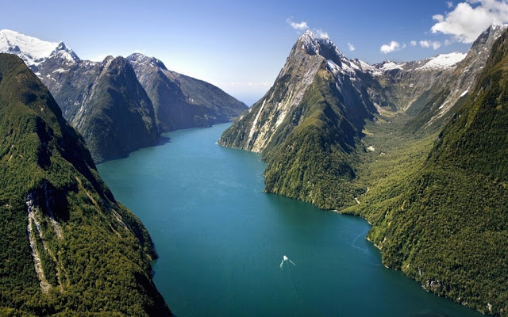

:تعريف المضيق المضيق لغة
مَضيق: اسم، والجمع: مَضائِقُ ومَضايقُ، وهو اسم مكان من ضاقَ، والمَضِيقُ: ما ضاق واشتدَّ من الأُمور. المضيق اصطلاحاً: هو عبارة عن قناة مائيّة تصل بين مسطحين مائيين كبيرين، كما أنّها تقع بين مساحتين كبيرتين من اليابسة، ويمكن استخدام مصطلح ممر مائي أو قناة على المضيق وكلّها كلمات مرادفة لبعضها.
:أهميّة المضيق
تحتلّ المضائق أهمية بالغة من جميع النواحي، حيث تُسهِم في تسهيل حركة الملاحة والمواصلات الدوليّة، كما أنّها تمكّن الدولة الساحلية المطلة على المضيق من التحكم بمرور السفن الأجنبيّة عبره والدخول بيسر، وكانت تعدّ عنصراً حاسماً في الانتصار بالحروب التي تنشب بالقرب منها
:أهم المضائق المائيّة في العالم
مضيق البوسفور أو إسطنبول يصل هذا المضيق بين البحر الأسود وبحر مرمرة، ويبلغ طوله 30 كم، ويتراوح عرضه بين 550 متراً و3000 متر، ويشكّل مع مضيق الدردنيل الحدود الجنوبيّة بين قارة آسيا وأوروبا. يتميز بأهميته في الملاحة البحريّة في العالم من خلال حركة السفن النشطة التي تحمل مختلف المواد والبضائع مثل البترول والغازات المسيلة وغيرها، لكنه يعتبر خطيراً في الوقت نفسه نظراً لضيق بعض المناطق فيه واختراقه من قِبل تيارات مائية خطيرة. تم بناء عدّة جسور على المضيق وهي جسر البوسفور، وجسر السلطان محمد الفاتح، وجسر السلطان سليم الأول، وجسر إسطنبول الثالث، كما تم افتتاح نفق مارماراي في مياهه احتفالاً بمرور تسعين عاماً على تأسيس الجمهوريّة التركيّة
:مضيق هرمز
يصل بين مياه الخليج العربي من جهة، ومياه خليج عمان، وبحر العرب، والمحيط الهندي من جهة أخرى، ويشكّل المنفذ البحري الوحيد للعراق، والكويت، والبحرين، وقطر، والإمارات العربية المتحدة، ويصل عرضه إلى 50 كم و34 كم عند أضيق نقطة، وعمقه 60 م فقط، بينما يصل عرض ممرّي الدخول والخروج فيه ميلين بحريّين أي 10,5 كم، ويعدّ هذا المضيق من أهم المضائق المائيّة في العالم وأنشطها من حيث حركة السفن في مياهه، حيث ينقل 40% من نسبة البترول المنقول عالمياً، واعتبره القانون الدولي جزءاً من أعالي البحار، ولجميع السفن حرية الحركة فيه طالما لا تؤثر في الدول الساحلية ولا تسبب لها المشاكل، كما كان مطمعاً للكثيرين منذ قديم الزمان مما أدى إلى نشوب الكثير من الحروب للسيطرة عليه
:مضيق جبل طارق
يقع مضيق جبل طارق البحري بين شبه جزيرة إيبيريا شمالا وشمال أفريقيا جنوبا، ويصل بين مياه البحر الأبيض المتوسط ومياه المحيط الأطلسي. تسميته العربية القديمة بحر الزُّقاق. يحدّ المدخل الغربي للمضيق كلّ من رأس سبارتيل (المغرب) ورأس الطرف الأغر (إسبانيا)
:مضيق باب المندب
مضيق باب المندب ممر مائي يصل البحر الأحمر بخليج عدن وبحر العرب. المسافة بين ضفتي المضيق هي 30 كم (20 ميل) تقريبا من رأس منهالي في الساحل الآسيوي إلى رأس سيان على الساحل الإفريقي. جزيرة بريم (مَيّون) التابعة لليمن، تفصل المضيق إلى قناتين الشرقية منها تعرف باسم باب اسكندر عرضها 3 كم وعمقها 30م. أما القناة الغربية واسمها “دقة المايون” فعرضها 25 كم وعمقه يصل إلى 310 م. بالقرب من الساحل الإفريقي توجد مجموعة من الجزر الصغيرة يطلق عليها الأشقاء السبعة
:قناة السويس
قناة السويس، هي ممر مائي صناعي بين مدينة بورسعيد (مصر) على البحر الأبيض المتوسط، ومدينة السويس (مصر) على البحر الأحمر. وتقسم القناة إلى قسمين، شمال وجنوب البحيرات المرّة
:مضيق الدردنيل
هو ممر مائي دولي يربط بحر إيجة ببحر مرمرة. ويفصل المضيق ما بين شاطئ آسيا الصغرى وشبه جزيرة جاليبولي في الجانب الأوروبا وهما من الأراضي التركية، يبلغ طول مضيق الدردنيل حوالي 61 كم، وعرضه يتراوح بين 1.2 إلى 6 كم ويصل عمقه من 50 إلى 60 متراً